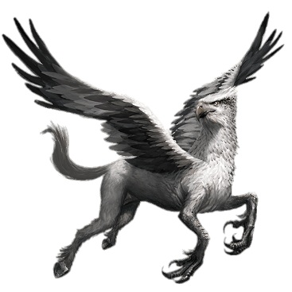
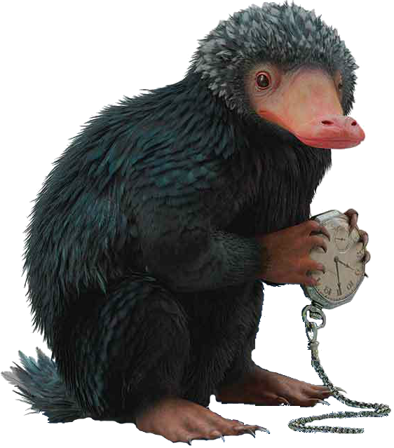
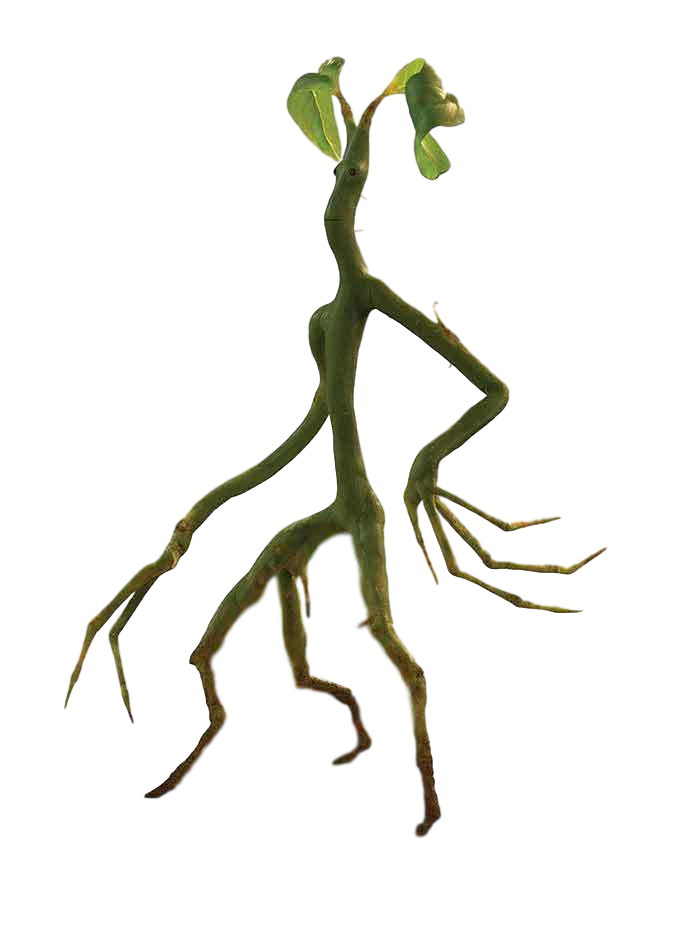
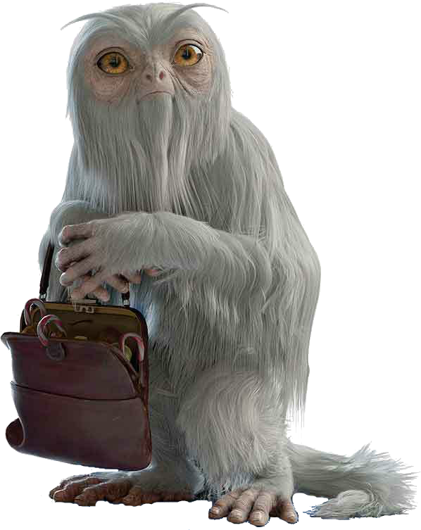

ANIMALES FANTÁSTICOS
Los animales o criaturas fantásticas son seres mágicos y sobrenaturales presentes en todo el mundo mágico. Por otra parte, la magizoología es la disciplina que se encarga del estudio de estas fantásticas criaturas.
HIPOGRIFO
Es una criatura mágica que tiene las patas delanteras, las alas y la cabeza de un águila gigante y el cuerpo, las patas traseras y la cola de un caballo. Es muy similar a otra criatura mágica, el grifo, con la parte trasera del caballo reemplazando a la parte posterior del león.
ESCARBATO
Es una criatura con un hocico largo y delgado que busca tesoros. Con una bolsa en su estómago. Se sienten muy atraídos hacia las cosas brillantes, lo que los hace adecuados para localizar objetos metálicos o con brillo, pero en el proceso pueden llegar a destrozar habitaciones en busca de tesoros, o morder, si una persona está usando cualquier joya.
BOWTRUCKLE
Es un guardián de árboles inmensamente difícil de detectar. Se puede encontrar en el oeste de Inglaterra, el sur de Alemania, y en algunos bosques escandinavos. Los dedos en forma de rama le sirven para arrancarle los ojos a un enemigo. Por lo general es una criatura pacífica, pero se vuelven violentos si alguien amenaza a su árbol, o incluso a sí mismo. Son expertos abriendo cerraduras.
DEMIGUISE
Es una bestia mágica herbívora y pacífica parecidos a monos, que puede predecir el futuro y hacerse invisible cuando se sienten amenazados, lo que hace que sea muy difícil de atrapar. Tambíen les gusta hacer de niñera y cuidar otras criaturas más pequeñas